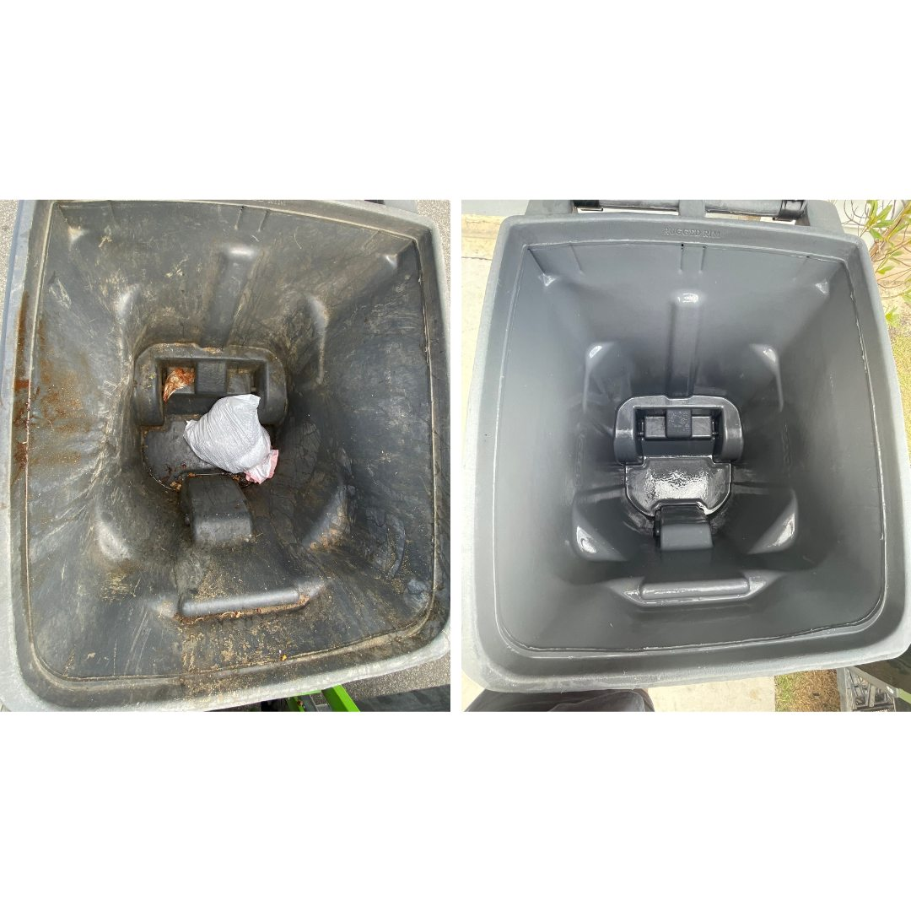

Why does my trash can smell? (And how to fix it)
Pickup day comes and goes, the bin is empty, and it still smells when you open the lid. That's because the smell usually isn't coming from the trash. It's coming from the bin itself.

What makes a trash can smell
- Liquid residue. Bags leak. Juice, grease and food liquid pool in the bottom of the bin and dry into a sticky layer.
- Bacteria and mold. That residue feeds bacteria and mold, and they grow fastest in warm, humid weather like ours.
- Hidden spots. Gunk builds up under the lid, around the hinge, and in the bottom corners, where a quick rinse doesn't reach.
- Scratched plastic. Over time, scratches in the plastic hold onto residue and odor.
Quick fixes between cleanings
- Sprinkle baking soda in the bottom of the empty bin.
- Put a layer of newspaper or flattened cardboard in the bottom to soak up leaks.
- Tie bags tightly and double-bag anything wet, like food scraps or seafood.
- Rinse the bin with a hose after pickup and let it dry with the lid open.
- Keep the bin in the shade and the lid closed.
What doesn't really work
Air fresheners and scented sprays only cover the smell for a day or two. A quick spray with the garden hose moves loose gunk around but doesn't remove the stuck-on layer that's causing the odor.
The real fix: a proper wash
To get rid of the smell, the residue has to come off. Scrub the inside with hot water and soap, including under the lid and around the hinge, then let the bin dry completely. For most Charleston homes, a monthly clean keeps the smell from coming back. See how often to clean your bins.
Or let us handle it. We wash your bins inside and out at 200° with an odor-neutralizing solution, right at your home, and return them to your garage. You don't need to be home, and we text you when we're done.
“I am so glad this service is available! Sebastian came out and cleaned both garbage cans. They are sparkling clean and smell good too — no longer stinky! Highly recommend their services!”
Christy Chappell, Google review
Our plans each include one bin: bi-weekly ($25 for the first cleaning and $15 for the second each month), monthly ($25), bi-monthly ($35 every other month), quarterly ($45), or a single visit ($80). Additional bins are $15 per bin, and there are no contracts. Compare plans.
Ready for bins that don't smell?
Book a cleaning online, or call or text Bryan with a question about your bins.